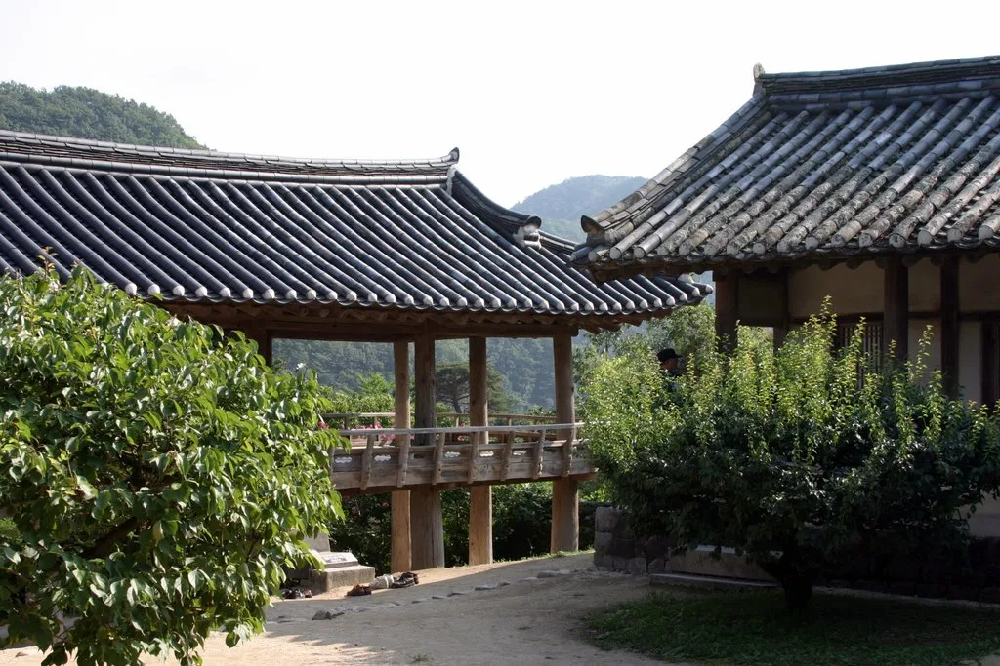
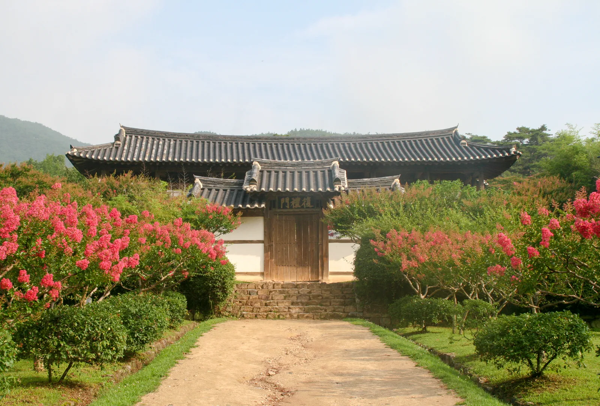
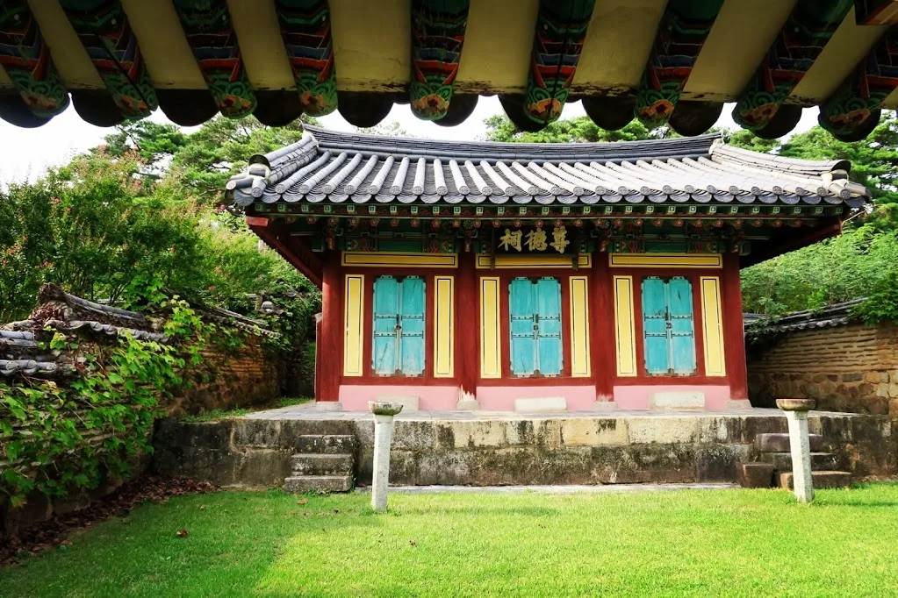
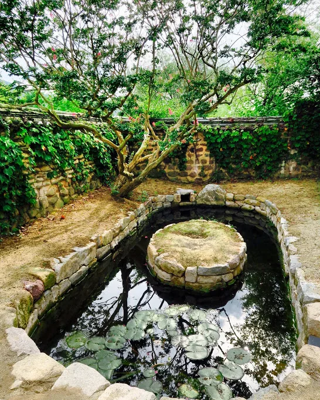

▲ 병산서원 누각 만대루에서 내다본 낙동강과 병산. 기둥과 서까래가 액자처럼 풍경을 감싼다
경북 안동시 풍천면, 낙동강이 굽이도는 자리에 병풍처럼 산이 둘러선 곳이 있다. 그 이름을 따 '병산(屛山)'이라 불린 이 자리에 병산서원이 앉아 있다. 서애 류성룡이 1572년 지금의 자리로 서당을 옮겨온 이래, 1863년 철종에게 '병산'이라는 사액을 받아 서원으로 승격됐다. 2019년에는 소수서원·도산서원 등과 함께 '한국의 서원'이라는 이름으로 유네스코 세계유산에 등재됐다. 사실 병산서원은 이보다 앞선 2010년, 강 건너 하회마을과 함께 '한국의 역사마을' 일원으로 이미 유네스코에 이름을 올린 적이 있다. 즉 하나의 서원이 서로 다른 두 세계유산에 중복으로 등재된 흔치 않은 사례다.
1. 병산서원의 내력 — 류성룡과 만대루

▲ 병산서원 강당(입교당)과 누각 만대루. 산으로 둘러싸인 경내가 한눈에 들어온다 ⓒ Wikimedia Commons
병산서원은 원래 풍산 유씨의 교육기관이던 풍악서당에서 출발했다. 류성룡이 1572년(선조 5년) 이곳으로 서당을 옮겨온 뒤, 그의 사후인 1614년 존덕사를 세워 위패를 모시면서 서원의 격을 갖췄다. 서원 안에는 위패를 모신 존덕사, 강당인 입교당, 서책을 보관하는 장판각, 유생 기숙사였던 동재·서재, 그리고 누각 만대루와 관리 시설인 고직사가 자리한다. 조선 후기 대부분의 서원이 제사 기능 위주로 흐른 것과 달리, 병산서원은 18세기까지도 교육 기능을 활발히 유지한 곳으로 평가받는다.
2. 만대루 — 병산서원이 유네스코에 오른 이유

▲ 배롱나무 꽃이 만개한 병산서원 정문 복례문. 여름부터 초가을까지 진분홍 꽃길이 이어진다 ⓒ Wikimedia Commons
병산서원의 백미는 단연 누각 만대루(晩對樓)다. 두보의 시구에서 이름을 따온 이 7칸짜리 누각은 사방이 트여 있어, 기둥 사이로 낙동강과 병산이 그대로 걸어 들어온다. 국가유산청은 만대루를 '우리나라 서원 누각의 대표작'으로 평가하며 보물로 지정했다. 계절과 시간에 따라 다르게 펼쳐지는 풍광 덕분에, 유네스코 세계유산위원회도 만대루와 그 조망을 병산서원의 핵심 가치로 꼽았다. 정문인 복례문(復禮門)을 지나 마당에 들어서면 좌우로 심어진 배롱나무가 여름부터 초가을까지 진분홍 꽃을 피워, 기와지붕과 대비되는 풍경을 만든다.

▲ 류성룡의 위패를 모신 사당 존덕사. 서원 내 다른 건물과 달리 단청이 화려하다 ⓒ Wikimedia Commons

▲ 서원 밖 연못 광영지. 하늘과 나무가 수면에 비친다는 뜻의 이름이 붙었다 ⓒ Wikimedia Commons
3. 관람시간·입장료 — 무료인데 유네스코가 두 번 인정한 곳
병산서원은 관람료와 주차료가 모두 무료다. 관람시간은 하절기(3~10월) 오전 9시부터 오후 6시까지, 동절기(11~2월)는 오전 9시부터 오후 5시까지로 계절에 따라 다르니 방문 전 확인이 필요하다. 서원 안 존덕사와 만대루 등 목조 건물은 문화유산 보호를 위해 내부 출입이 제한되는 구간이 있을 수 있으므로, 안내 표지를 따르는 것이 좋다.
| 항목 | 내용 |
|---|---|
| 세계유산 등재 | 2010년 '한국의 역사마을: 하회와 양동'(하회마을과 함께) / 2019년 '한국의 서원' |
| 관람시간 | 하절기(3~10월) 09:00~18:00 / 동절기(11~2월) 09:00~17:00 |
| 입장료·주차 | 무료 |
| 핵심 건물 | 만대루(보물), 존덕사(위패), 입교당(강당), 복례문(정문) |
| 위치 | 경북 안동시 풍천면 병산길 386 |
4. 하회마을 연계 — 강 건너인데 길은 돌아가야 한다
병산서원에서 낙동강 건너편을 보면 바로 하회마을이 보일 정도로 두 곳은 가깝다. 실제로 옛사람들은 나룻배로 강을 건너 병산서원과 하회마을을 오갔고, 지금도 계절과 운영 여건에 따라 나루터 도선이 다니기도 한다. 다만 자동차로 이동할 경우에는 강을 직선으로 가로지르는 다리가 없어, 하회마을 쪽 도로를 따라 크게 우회해야 한다는 점을 감안해야 한다. 방문 전 안동시 문화관광 홈페이지나 하회마을 관리사무소를 통해 그 시점의 나루터 운영 여부를 확인하면 시간을 아낄 수 있다.
5. 방문 팁 — 어느 계절에 가야 할까
만대루에서 보는 풍경은 계절마다 색이 달라진다는 것이 병산서원의 가장 큰 매력이다. 여름철에는 배롱나무 진분홍 꽃과 짙푸른 낙동강이, 가을철에는 병산 자락의 단풍과 강물에 비친 붉은빛이 만대루 기둥 사이로 걸린다. 사진을 남기고 싶다면 오전 이른 시간 역광을 피해 방문하는 편이 좋고, 주말과 단풍철 성수기에는 방문객이 몰릴 수 있으니 평일 오전을 노려보는 것도 방법이다.
✅ 안동 병산서원, 가기 전 체크리스트
· 2019년 '한국의 서원'으로 유네스코 세계유산 등재(하회마을과 함께 2010년에도 등재된 이력 있음)
· 핵심 볼거리는 누각 만대루(보물), 사당 존덕사, 정문 복례문
· 관람료·주차료 모두 무료, 관람시간은 하절기·동절기 다름(09:00~18:00 / 09:00~17:00)
· 강 건너 하회마을과 가깝지만 자동차로는 우회 도로를 타야 함
· 배롱나무는 여름~초가을, 단풍은 가을이 방문 적기